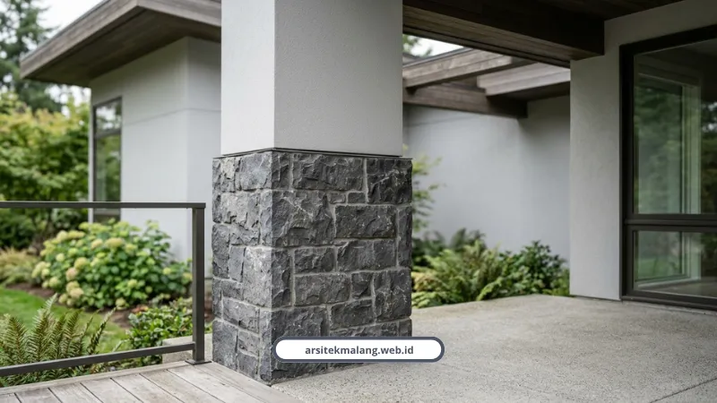

Ringkasan Inti
- Ketahanan terhadap kelembapan menjadi pertimbangan utama karena iklim tropis Malang memiliki curah hujan yang cukup tinggi.
- Biaya perawatan jangka panjang perlu dihitung selain harga beli awal material fasad.
- Kompatibilitas material dengan struktur bangunan memengaruhi keamanan dan daya tahan fasad.
- Nilai estetika yang timeless membantu fasad tetap relevan tanpa perlu sering direnovasi.
Daftar Isi Artikel
- Apa Saja Pertimbangan Utama dalam Memilih Material Fasad Rumah?
- Material Apa yang Paling Tahan Cuaca Ekstrem di Malang?
- Bagaimana Cara Menyeimbangkan Biaya dan Daya Tahan Material Fasad?
- Bagaimana Kompatibilitas Material dengan Struktur Memengaruhi Pilihan Fasad?
- Apa Peran Orientasi Fasad dalam Menentukan Pilihan Material?
- FAQ (Pertanyaan Sering Diajukan)
Memilih material fasad rumah Malang perlu mempertimbangkan ketahanan terhadap kelembapan, biaya perawatan, kesesuaian iklim, kompatibilitas struktur, dan nilai estetika jangka panjang.
Apa Saja Pertimbangan Utama dalam Memilih Material Fasad Rumah?
Pertimbangan utama dalam memilih material fasad rumah mencakup aspek teknis dan estetika yang saling berkaitan, sehingga keputusan yang diambil sebaiknya mempertimbangkan kondisi jangka panjang, bukan hanya tampilan awal.
Lima pertimbangan yang perlu diperhatikan:
- Ketahanan terhadap kelembapan dan cuaca ekstrem, mengingat curah hujan tinggi khas iklim tropis Malang.
- Biaya perawatan jangka panjang, termasuk kebutuhan pelapisan ulang atau penggantian material tertentu secara berkala.
- Kompatibilitas material dengan struktur bangunan, terutama untuk material dengan bobot signifikan seperti batu alam.
- Kesesuaian dengan orientasi fasad terhadap arah hujan dan sinar matahari langsung.
- Nilai estetika yang tidak lekang oleh tren, sehingga fasad tetap relevan dalam jangka panjang.

Material Apa yang Paling Tahan Cuaca Ekstrem di Malang?
Material yang paling tahan cuaca ekstrem di Malang umumnya memiliki daya serap air rendah dan ketahanan terhadap perubahan suhu yang signifikan antara siang dan malam hari.
Beberapa material yang dikenal tahan cuaca ekstrem:
- Batu alam, seperti andesit, memiliki daya tahan tinggi terhadap kelembapan dan perubahan cuaca, cocok untuk fasad eksterior.
- Bata ekspos berkualitas tinggi dengan daya serap air rendah, tahan lama meski sering terpapar hujan langsung.
- GRC (Glassfiber Reinforced Cement), menawarkan ketahanan air yang baik dengan bobot lebih ringan dibanding batu alam.
- Kayu keras seperti ulin atau merbau dengan perawatan berkala, tetap menjadi pilihan populer meski membutuhkan perhatian ekstra.
Catatan Arsitek Malang
Di wilayah Malang yang memiliki kelembapan udara tinggi dan curah hujan pegunungan, selalu gunakan pelapis water repellent (coating anti-lumut) berbasis siloxane berkualitas untuk material batu alam dan bata ekspos. Lengkapi juga fasad dengan teritisan atap atau canopy kantilever minimal 1 meter guna mencegah tampias air hujan langsung.
Bagaimana Cara Menyeimbangkan Biaya dan Daya Tahan Material Fasad?
Menyeimbangkan biaya dan daya tahan material fasad dapat dilakukan melalui strategi kombinasi material, di mana material premium ditempatkan pada area fokal sementara material lebih terjangkau digunakan pada area pendukung.
Strategi yang dapat diterapkan untuk menyeimbangkan biaya:
- Menempatkan material premium seperti batu alam hanya pada area entrance atau dinding fokal utama.
- Menggunakan cat eksterior berkualitas tinggi sebagai alternatif ekonomis untuk area dinding yang lebih luas.
- Memilih material lokal yang tersedia di sekitar Malang untuk mengurangi biaya distribusi dibanding material impor.
- Mempertimbangkan biaya perawatan jangka panjang, bukan hanya harga beli awal, dalam menghitung total investasi material.
Bagaimana Kompatibilitas Material dengan Struktur Memengaruhi Pilihan Fasad?
Kompatibilitas material dengan struktur bangunan menjadi pertimbangan penting, terutama untuk material dengan bobot signifikan yang dapat memengaruhi beban struktural bangunan secara keseluruhan.
Aspek kompatibilitas yang perlu diperhatikan:
- Material berat seperti batu alam memerlukan perhitungan struktur tambahan untuk memastikan dinding mampu menahan beban.
- Sistem pemasangan material perlu disesuaikan dengan jenis dinding, apakah menggunakan perekat khusus atau sistem mekanis tambahan.
- Material dengan ekspansi termal berbeda perlu dipasang dengan celah yang tepat untuk menghindari retak akibat perubahan suhu.
Apa Peran Orientasi Fasad dalam Menentukan Pilihan Material?
Orientasi fasad terhadap arah hujan dan sinar matahari memengaruhi jenis material yang paling sesuai digunakan pada masing-masing sisi bangunan.
Pertimbangan orientasi yang perlu diperhatikan:
- Sisi bangunan yang menghadap arah hujan dominan memerlukan material dengan daya tahan air yang lebih tinggi.
- Area yang terpapar sinar matahari langsung sepanjang hari membutuhkan material yang tidak mudah pudar atau retak akibat panas.
- Bagian fasad yang terlindungi overhang atap dapat menggunakan material dengan perawatan lebih sederhana.
FAQ (Pertanyaan Sering Diajukan)
Apakah batu alam lebih baik dibanding bata ekspos untuk fasad rumah Malang?
Keduanya memiliki keunggulan masing-masing, dan pilihan terbaik bergantung pada anggaran, beban struktur, serta preferensi estetika yang diinginkan.
Berapa lama material fasad perlu perawatan ulang di iklim Malang?
Frekuensi perawatan dapat bervariasi tergantung jenis material dan tingkat paparan cuaca, sehingga perlu disesuaikan dengan kondisi aktual di lapangan.
Apakah kombinasi beberapa material fasad akan terlihat tidak konsisten?
Kombinasi material dapat terlihat harmonis apabila direncanakan dengan proporsi dan skema warna yang tepat, sebagaimana biasa dilakukan arsitek berpengalaman.
Konsultasikan Desain Fasad Rumah Impian Anda
Diskusikan pemilihan material fasad tahan iklim, visualisasi 3D render, dan detail konstruksi bersama tim arsitek Malang.

Naura Regyna Putri
Penulis & Tim Riset Arsitektur Maroon Arsitek Malang, spesialis material eksterior tropis, perencanaan tata ruang, dan pengawasan konstruksi di Malang Raya.